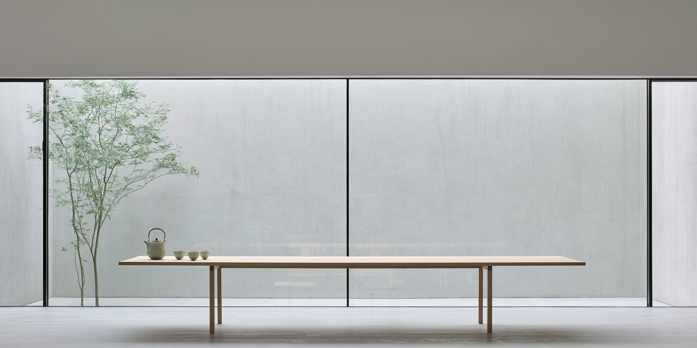
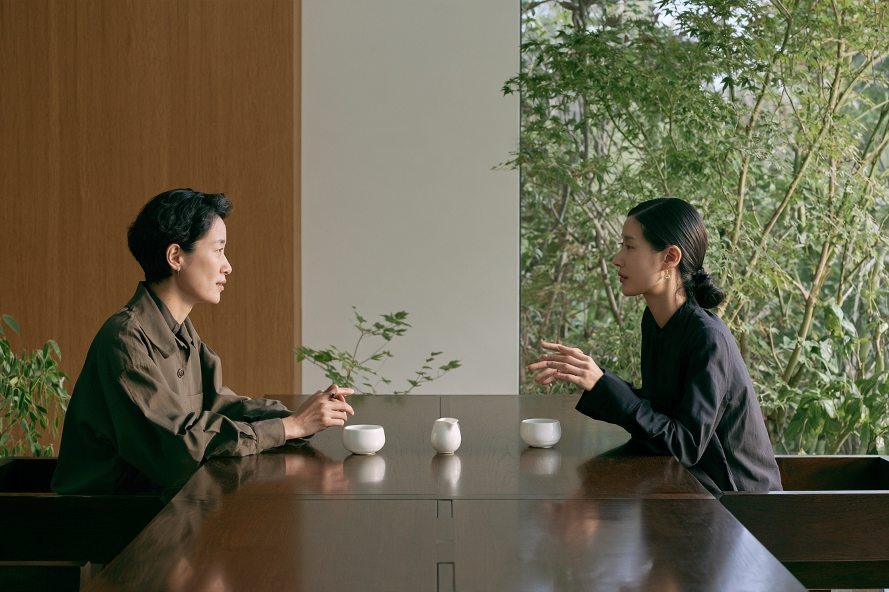

The Courtyard.
A concept for an everyday tea space, shaped around natural light, a long table, and the changing view of a garden.

A different pace,
in the same day.
There is no right way to sit here. Come with a book, with a friend, or with nothing planned. The room is arranged to make both quiet and conversation feel at home.
White walls hold the light. Wood brings warmth to the table. The garden offers something to watch without asking for attention.

